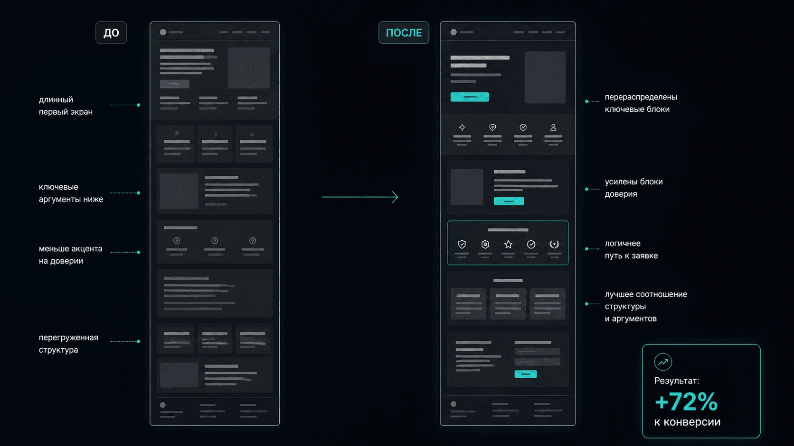

A/B тест лендинга премиального travel-продукта
+72% к конверсии после аудита, доработки страницы и повторного теста
Кратко о задаче
Премиальное авторское путешествие. Высокая стоимость, длинный цикл принятия решения, важность доверия к организаторам и маршруту.
Проверить корректность первого теста, оценить поведение пользователей, сформулировать гипотезы и подготовить повторный тест с чистой аналитикой.
Продукт не массовый. Решение формируется не через быстрый скролл, а через последовательное изучение ценности, условий и подтверждений доверия.
Что было на входе
Встроена в структуру сайта
- Подробная, насыщенная структура
- Больше информации о путешествии
- Сильнее по содержанию и раскрытию продукта
- Требует вдумчивого изучения
Классический продающий лендинг
- Компактная структура, легче читается
- Больше фокуса на последовательном ведении
- Ближе к привычной маркетинговой логике
- Быстрее проводит пользователя вниз по странице
Гипотеза
Для премиального авторского путешествия решение формируется постепенно. Пользователь сначала считывает предложение, затем проверяет маршрут, условия, стоимость, уровень организации и подтверждения доверия, и только после этого переходит к заявке.
Задача была не в том, чтобы просто сократить страницу или сделать её визуально легче. Важно было сохранить сильные стороны версии A, снизить перегрузку, усилить доверие и сделать путь к заявке более понятным.
Что я сделала
Аудит первого теста и аналитической настройки
Анализ поведения пользователей (Вебвизор, карты скролла и кликов)
Формулировка гипотез и маркетинговых рекомендаций
Доработка версии A на Tilda и настройка целей
Подготовка и анализ повторного A/B теста
Что было улучшено
- Перегруженный первый экран
- Часть ключевых аргументов слишком низко
- Блоки доверия раскрыты слабо
- Путь к заявке менее явный
- Перераспределены ключевые блоки
- Усилены элементы доверия и подтверждений
- Улучшена навигация и структура страницы
- Логика перехода к заявке стала яснее

Как перераспределение блоков, усиление доверия и чёткий путь к заявке повлияли на конверсию
Результат
Главный вывод
Этот кейс показывает разницу между страницей, которая выглядит как хороший лендинг, и страницей, которая приводит к заявке. Версия B была ближе к классической логике продающего лендинга: она лучше проводила пользователя вниз по структуре и выглядела более компактной. Но для премиального travel-продукта этого оказалось недостаточно.
В продуктах с высокой стоимостью заявки решение формируется сложнее. Пользователю нужно быстро понять предложение, почувствовать надежность, увидеть ценность маршрута, получить достаточно подтверждений, снять сомнения по организации и понять, почему этому проекту можно доверять. Поэтому итоговое решение нельзя принимать только по глубине скролла, кликам или визуальной убедительности страницы. Важно смотреть на связку поведения, аналитики и фактических заявок.
Моя роль в проекте
- Аудит A/B теста и аналитики
- UX и маркетинговый анализ лендинга
- Подготовка гипотез и рекомендаций
- Доработка версии A на Tilda
- Настройка целей, форм и фиксации действий
- Анализ результатов второго теста по Метрике, CRM Tilda, Вебвизору, картам скролла и кликов
Стек
Если вам нужно не просто сравнить две страницы, а понять, что реально влияет на заявку, можно начать с аудита.
Напишите мне в Telegram. Я разберу текущую структуру, проверю аналитику и покажу, где теряются пользователи и какие правки дадут наибольший рост конверсии.
Обсудить аудит в Telegram